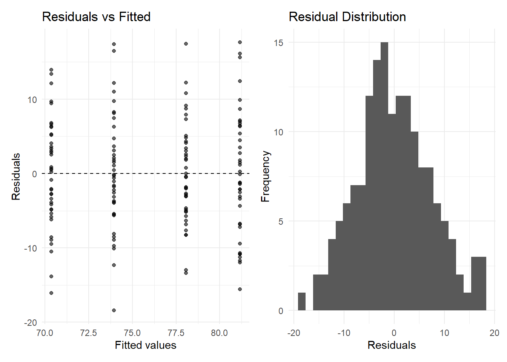
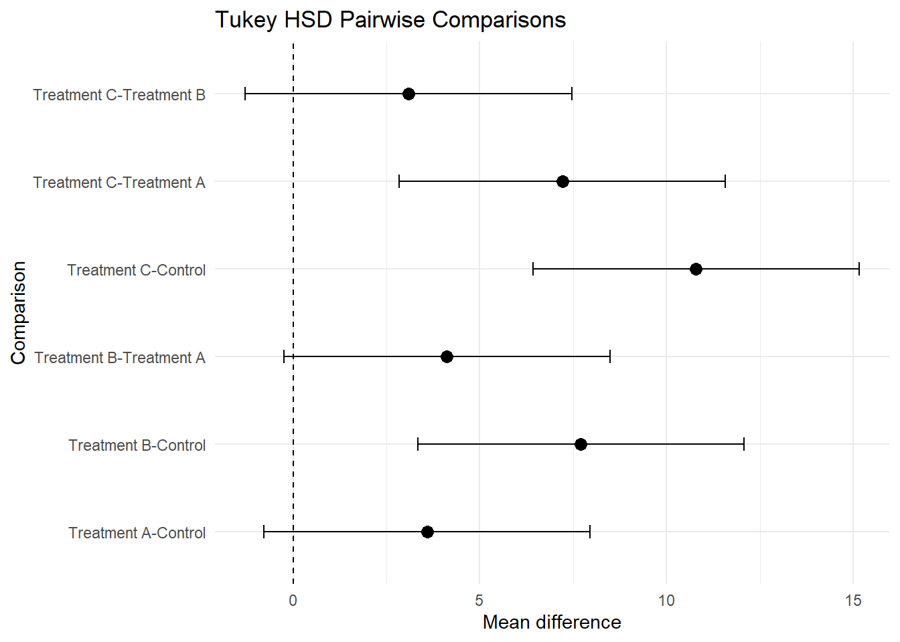
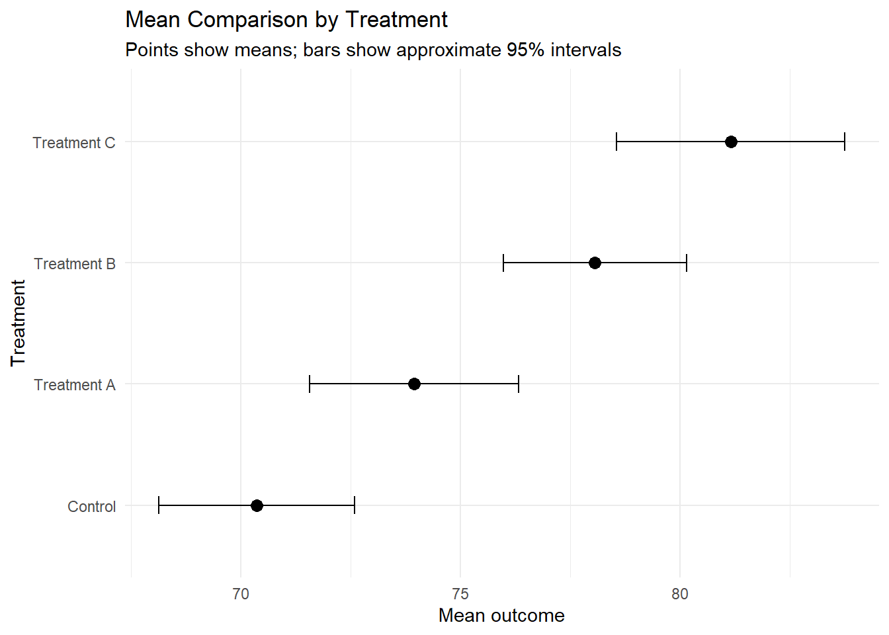
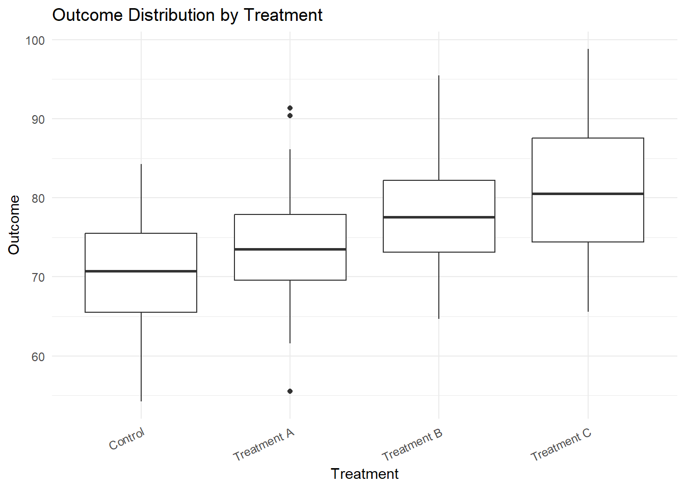
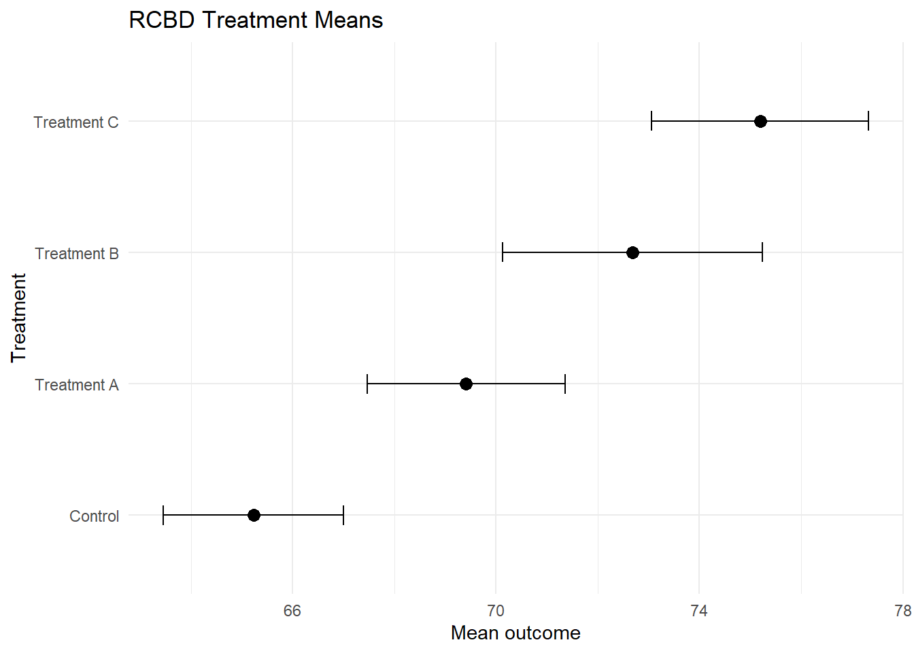
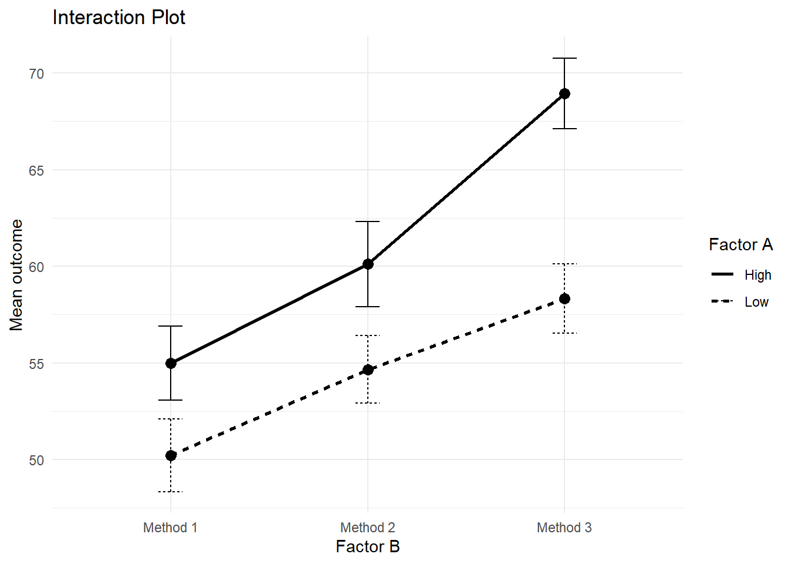

flowchart TD
A[Research Question]
--> B[Design Type]
B --> C[CRD / RCBD / Factorial]
C --> D[Fit ANOVA Model]
D --> E[Check Assumptions]
E --> F{Significant Effect?}
F -->|Yes| G[Post Hoc / emmeans]
F -->|No| H[Report No Evidence]
G --> I[Mean Comparison Plot]
H --> I
I --> J[Academic Reporting]
Advanced 13. Thiết kế Thí nghiệm và ANOVA
Experimental Design, ANOVA, and Post Hoc Analysis with R
Tổng quan bài học
TipKết quả học tập (Learning Outcomes)
Sau khi hoàn thành bài học này, học viên có thể:
- Hiểu vai trò của thiết kế thí nghiệm (Experimental Design)
- Phân biệt CRD, RCBD, factorial design và split-plot design
- Hiểu ANOVA dùng để làm gì
- Chạy one-way ANOVA
- Chạy two-way ANOVA
- Chạy RCBD ANOVA
- Kiểm tra giả định ANOVA
- Thực hiện post hoc test
- Sử dụng estimated marginal means bằng
emmeans - Tạo biểu đồ mean comparison
- Viết kết quả ANOVA theo chuẩn học thuật
NoteLogic bài học (Module Logic)
Bài học này trả lời câu hỏi:
Khi nghiên cứu có nhiều nhóm, nghiệm thức hoặc thiết kế thí nghiệm, làm thế nào để so sánh kết quả một cách đúng đắn?
Quy trình:
Research Question
↓
Experimental Design
↓
Outcome Variable
↓
ANOVA Model
↓
Assumption Check
↓
Post Hoc Test
↓
Visualization
↓
Academic ReportingQuy trình ANOVA
1. Vì sao cần thiết kế thí nghiệm?
NoteKiến thức nền tảng (Knowledge Notes)
Là gì? (What?)
Thiết kế thí nghiệm (Experimental Design) là cách bố trí nghiệm thức, đơn vị thí nghiệm, lặp lại và kiểm soát sai số để kiểm tra tác động của các yếu tố nghiên cứu.
Tại sao cần? (Why?)
Một thiết kế tốt giúp:
- Giảm sai số
- Tăng độ tin cậy
- Kiểm soát yếu tố gây nhiễu
- So sánh nghiệm thức công bằng
- Hỗ trợ kết luận nhân quả tốt hơn
Khi nào dùng? (When?)
Dùng khi nghiên cứu có:
- Nhiều nhóm điều trị
- Nhiều nghiệm thức
- Nhiều mức của một yếu tố
- Yếu tố khối (block)
- Tương tác giữa các yếu tố
Thực hiện thế nào? (How?)
Chọn thiết kế dựa trên:
- Mục tiêu nghiên cứu
- Số yếu tố
- Số nghiệm thức
- Điều kiện đồng nhất hay không đồng nhất
- Có cần block hay không
ImportantỨng dụng trong nghiên cứu (Research Application)
ANOVA và thiết kế thí nghiệm được dùng trong:
- Giáo dục
- Nông nghiệp
- Y tế
- Tâm lý học
- Quản trị
- Marketing
- Đánh giá chương trình
- Thử nghiệm can thiệp
- Nghiên cứu năng suất và chất lượng
WarningSai lầm thường gặp (Common Mistakes)
Người học thường mắc lỗi:
- Dùng nhiều t-test thay vì ANOVA
- Không kiểm tra giả định
- Không xét block trong thiết kế RCBD
- Không kiểm tra interaction trong factorial design
- Chỉ báo cáo p-value mà không báo cáo mean và CI
- Diễn giải post hoc khi main effect không phù hợp
- Không trình bày thiết kế thí nghiệm rõ ràng
2. Chuẩn bị dữ liệu
NoteKiến thức nền tảng (Knowledge Notes)
Module này dùng dữ liệu mô phỏng public để render ổn định.
Dữ liệu gồm:
treatment: nghiệm thứcblock: khốifactor_a: yếu tố Afactor_b: yếu tố Boutcome: biến phụ thuộcrep: lần lặp
Cài đặt package
install.packages("tidyverse")
install.packages("car")
install.packages("emmeans")
install.packages("agricolae")
install.packages("broom")
install.packages("gt")
install.packages("patchwork")Nạp package
library(tidyverse)
library(broom)
library(gt)
library(patchwork)Kiểm tra package tùy chọn
has_car <- requireNamespace("car", quietly = TRUE)
has_emmeans <- requireNamespace("emmeans", quietly = TRUE) && "contrast" %in% getNamespaceExports("emmeans")
has_agricolae <- requireNamespace("agricolae", quietly = TRUE)
tibble(
package = c("car", "emmeans", "agricolae"),
installed = c(has_car, has_emmeans, has_agricolae)
)Tạo dữ liệu one-way ANOVA
set.seed(123)
oneway_data <- tibble(
treatment = rep(c("Control", "Treatment A", "Treatment B", "Treatment C"), each = 40),
outcome = c(
rnorm(40, mean = 70, sd = 8),
rnorm(40, mean = 74, sd = 8),
rnorm(40, mean = 78, sd = 8),
rnorm(40, mean = 82, sd = 8)
)
)
glimpse(oneway_data)Rows: 160
Columns: 2
$ treatment <chr> "Control", "Control", "Control", "Control", "Control", "Cont…
$ outcome <dbl> 65.51619, 68.15858, 82.46967, 70.56407, 71.03430, 83.72052, …Tạo dữ liệu RCBD
set.seed(123)
rcbd_data <- expand_grid(
block = factor(paste0("Block ", 1:6)),
treatment = factor(c("Control", "Treatment A", "Treatment B", "Treatment C")),
rep = 1:3
) |>
mutate(
block_effect = as.numeric(block) * 1.5,
treatment_effect = case_when(
treatment == "Control" ~ 0,
treatment == "Treatment A" ~ 4,
treatment == "Treatment B" ~ 7,
treatment == "Treatment C" ~ 10
),
outcome = 60 + block_effect + treatment_effect + rnorm(n(), 0, 4)
)
glimpse(rcbd_data)Rows: 72
Columns: 6
$ block <fct> Block 1, Block 1, Block 1, Block 1, Block 1, Block 1,…
$ treatment <fct> Control, Control, Control, Treatment A, Treatment A, …
$ rep <int> 1, 2, 3, 1, 2, 3, 1, 2, 3, 1, 2, 3, 1, 2, 3, 1, 2, 3,…
$ block_effect <dbl> 1.5, 1.5, 1.5, 1.5, 1.5, 1.5, 1.5, 1.5, 1.5, 1.5, 1.5…
$ treatment_effect <dbl> 0, 0, 0, 4, 4, 4, 7, 7, 7, 10, 10, 10, 0, 0, 0, 4, 4,…
$ outcome <dbl> 59.25810, 60.57929, 67.73483, 65.78203, 66.01715, 72.…Tạo dữ liệu factorial
set.seed(123)
factorial_data <- expand_grid(
factor_a = factor(c("Low", "High")),
factor_b = factor(c("Method 1", "Method 2", "Method 3")),
rep = 1:35
) |>
mutate(
a_effect = if_else(factor_a == "High", 6, 0),
b_effect = case_when(
factor_b == "Method 1" ~ 0,
factor_b == "Method 2" ~ 4,
factor_b == "Method 3" ~ 8
),
interaction_effect = if_else(factor_a == "High" & factor_b == "Method 3", 5, 0),
outcome = 50 + a_effect + b_effect + interaction_effect + rnorm(n(), 0, 6)
)
glimpse(factorial_data)Rows: 210
Columns: 7
$ factor_a <fct> Low, Low, Low, Low, Low, Low, Low, Low, Low, Low, L…
$ factor_b <fct> Method 1, Method 1, Method 1, Method 1, Method 1, M…
$ rep <int> 1, 2, 3, 4, 5, 6, 7, 8, 9, 10, 11, 12, 13, 14, 15, …
$ a_effect <dbl> 0, 0, 0, 0, 0, 0, 0, 0, 0, 0, 0, 0, 0, 0, 0, 0, 0, …
$ b_effect <dbl> 0, 0, 0, 0, 0, 0, 0, 0, 0, 0, 0, 0, 0, 0, 0, 0, 0, …
$ interaction_effect <dbl> 0, 0, 0, 0, 0, 0, 0, 0, 0, 0, 0, 0, 0, 0, 0, 0, 0, …
$ outcome <dbl> 46.63715, 48.61894, 59.35225, 50.42305, 50.77573, 6…3. Các loại thiết kế thí nghiệm phổ biến
TipKết quả học tập (Learning Outcomes)
Sau phần này, học viên có thể phân biệt các thiết kế cơ bản.
NoteKiến thức nền tảng (Knowledge Notes)
| Thiết kế | Tên đầy đủ | Khi nào dùng |
|---|---|---|
| CRD | Completely Randomized Design | Đơn vị thí nghiệm đồng nhất |
| RCBD | Randomized Complete Block Design | Có yếu tố khối gây nhiễu |
| Factorial | Factorial Design | Có từ hai yếu tố trở lên |
| Split-plot | Split-plot Design | Có yếu tố khó random hóa ở cấp nhỏ |
Sơ đồ chọn thiết kế
flowchart TD
A[Experimental Question]
--> B{One factor?}
B -->|Yes| C{Need blocks?}
C -->|No| D[CRD]
C -->|Yes| E[RCBD]
B -->|No| F{Multiple factors?}
F -->|Yes| G[Factorial Design]
G --> H{Different randomization levels?}
H -->|Yes| I[Split-plot Design]
H -->|No| J[Two-way / Multi-way ANOVA]
Thiết kế thí nghiệm phải được quyết định trước khi thu thập dữ liệu, không phải sau khi đã có dữ liệu.
4. One-way ANOVA
TipKết quả học tập (Learning Outcomes)
Sau phần này, học viên có thể:
- Chạy one-way ANOVA
- Hiểu F-test
- Diễn giải main effect của treatment
- Tạo bảng ANOVA
NoteKiến thức nền tảng (Knowledge Notes)
One-way ANOVA là gì?
One-way ANOVA dùng để so sánh mean của một biến phụ thuộc giữa nhiều hơn hai nhóm.
Khi nào dùng?
Dùng khi có:
1 outcome continuous
1 factor categorical với ≥ 3 nhómThống kê mô tả theo nhóm
oneway_summary <- oneway_data |>
group_by(treatment) |>
summarise(
n = n(),
mean = mean(outcome),
sd = sd(outcome),
se = sd / sqrt(n),
.groups = "drop"
)
oneway_summaryChạy one-way ANOVA
oneway_model <- aov(
outcome ~ treatment,
data = oneway_data
)
summary(oneway_model) Df Sum Sq Mean Sq F value Pr(>F)
treatment 3 2671 890.2 15.73 5.49e-09 ***
Residuals 156 8828 56.6
---
Signif. codes: 0 '***' 0.001 '**' 0.01 '*' 0.05 '.' 0.1 ' ' 1Bảng ANOVA tidy
tidy(oneway_model)
ImportantDiễn giải kết quả (Interpretation)
Nếu p-value của treatment nhỏ hơn .05, có bằng chứng cho thấy ít nhất một nhóm có mean khác nhóm khác.
ANOVA không cho biết nhóm nào khác nhóm nào. Cần post hoc test.
5. Kiểm tra giả định ANOVA
TipKết quả học tập (Learning Outcomes)
Sau phần này, học viên có thể:
- Kiểm tra normality của residuals
- Kiểm tra homogeneity of variance
- Vẽ residual plots
- Biết khi nào cần phương pháp robust hoặc non-parametric
NoteKiến thức nền tảng (Knowledge Notes)
ANOVA thường dựa trên các giả định:
| Giả định | Ý nghĩa |
|---|---|
| Independence | Quan sát độc lập |
| Normality | Residuals gần chuẩn |
| Homogeneity | Phương sai giữa nhóm tương đương |
| Correct design | Mô hình đúng với thiết kế |
Residual diagnostic plots
diagnostic_data <- augment(oneway_model)
p_resid_fitted <- ggplot(
diagnostic_data,
aes(x = .fitted, y = .resid)
) +
geom_point(alpha = 0.6) +
geom_hline(yintercept = 0, linetype = "dashed") +
labs(
title = "Residuals vs Fitted",
x = "Fitted values",
y = "Residuals"
) +
theme_minimal()
p_resid_hist <- ggplot(diagnostic_data, aes(x = .resid)) +
geom_histogram(bins = 25) +
labs(
title = "Residual Distribution",
x = "Residuals",
y = "Frequency"
) +
theme_minimal()
p_resid_fitted + p_resid_hist
Shapiro-Wilk test
shapiro.test(residuals(oneway_model))
Shapiro-Wilk normality test
data: residuals(oneway_model)
W = 0.99353, p-value = 0.6978Levene’s test
if (has_car) {
car::leveneTest(
outcome ~ treatment,
data = oneway_data
)
}
WarningSai lầm thường gặp (Common Mistakes)
Không nên chỉ dựa vào một kiểm định để quyết định mô hình đúng hay sai.
Với sample lớn, kiểm định normality có thể rất nhạy.
Cần kết hợp:
- Residual plots
- Thiết kế nghiên cứu
- Robustness checks
- Kiến thức thực tế
6. Post hoc test
TipKết quả học tập (Learning Outcomes)
Sau phần này, học viên có thể:
- Hiểu vì sao cần post hoc
- Chạy Tukey HSD
- Đọc pairwise comparisons
- Tránh lỗi multiple testing
NoteKiến thức nền tảng (Knowledge Notes)
ANOVA trả lời:
Có sự khác biệt giữa các nhóm không?Post hoc test trả lời:
Nhóm nào khác nhóm nào?Tukey HSD
tukey_result <- TukeyHSD(oneway_model)
tukey_result Tukey multiple comparisons of means
95% family-wise confidence level
Fit: aov(formula = outcome ~ treatment, data = oneway_data)
$treatment
diff lwr upr p adj
Treatment A-Control 3.584806 -0.7835552 7.953167 0.1478307
Treatment B-Control 7.701390 3.3330292 12.069752 0.0000559
Treatment C-Control 10.791792 6.4234302 15.160153 0.0000000
Treatment B-Treatment A 4.116584 -0.2517769 8.484946 0.0725871
Treatment C-Treatment A 7.206985 2.8386241 11.575347 0.0001859
Treatment C-Treatment B 3.090401 -1.2779602 7.458762 0.2599217Tidy Tukey result
tukey_tidy <- broom::tidy(tukey_result)
tukey_tidyBiểu đồ Tukey comparisons
if ("comparison" %in% names(tukey_tidy)) {
tukey_plot_data <- tukey_tidy |>
mutate(comparison_label = as.character(comparison))
} else if ("contrast" %in% names(tukey_tidy)) {
tukey_plot_data <- tukey_tidy |>
mutate(comparison_label = as.character(contrast))
} else if ("term" %in% names(tukey_tidy)) {
tukey_plot_data <- tukey_tidy |>
mutate(comparison_label = as.character(term))
} else {
tukey_plot_data <- tukey_tidy |>
mutate(comparison_label = paste0("Comparison ", row_number()))
}
tukey_plot_data |>
ggplot(aes(x = estimate, y = comparison_label)) +
geom_point(size = 3) +
geom_errorbarh(
aes(xmin = conf.low, xmax = conf.high),
height = 0.15
) +
geom_vline(xintercept = 0, linetype = "dashed") +
labs(
title = "Tukey HSD Pairwise Comparisons",
x = "Mean difference",
y = "Comparison"
) +
theme_minimal()
ImportantDiễn giải kết quả (Interpretation)
Nếu confidence interval của một cặp so sánh không cắt 0, hai nhóm đó có khác biệt có ý nghĩa thống kê.
7. Estimated marginal means
TipKết quả học tập (Learning Outcomes)
Sau phần này, học viên có thể:
- Hiểu estimated marginal means
- Dùng
emmeans - Tạo bảng mean đã điều chỉnh
- So sánh nhóm bằng pairwise contrasts
NoteKiến thức nền tảng (Knowledge Notes)
Estimated marginal means (EMMs) là mean được ước lượng từ mô hình, thường hữu ích khi mô hình có nhiều yếu tố hoặc covariates.
emmeans cho one-way ANOVA
if (has_emmeans) {
emmeans_oneway <- emmeans::emmeans(
oneway_model,
~ treatment
)
emmeans_oneway
} treatment emmean SE df lower.CL upper.CL
Control 70.4 1.19 156 68.0 72.7
Treatment A 73.9 1.19 156 71.6 76.3
Treatment B 78.1 1.19 156 75.7 80.4
Treatment C 81.2 1.19 156 78.8 83.5
Confidence level used: 0.95 Pairwise comparison bằng emmeans
if (has_emmeans && exists("emmeans_oneway")) {
emmeans::contrast(
emmeans_oneway,
method = "pairwise",
adjust = "tukey"
)
} contrast estimate SE df t.ratio p.value
Control - Treatment A -3.58 1.68 156 -2.131 0.1478
Control - Treatment B -7.70 1.68 156 -4.578 <0.0001
Control - Treatment C -10.79 1.68 156 -6.416 <0.0001
Treatment A - Treatment B -4.12 1.68 156 -2.447 0.0726
Treatment A - Treatment C -7.21 1.68 156 -4.284 0.0002
Treatment B - Treatment C -3.09 1.68 156 -1.837 0.2599
P value adjustment: tukey method for comparing a family of 4 estimates emmeans rất hữu ích khi phân tích factorial design, ANCOVA và mixed models.
8. Biểu đồ mean comparison
TipKết quả học tập (Learning Outcomes)
Sau phần này, học viên có thể tạo biểu đồ mean và confidence interval.
Mean plot
fig_mean_comparison <- ggplot(
oneway_summary,
aes(x = mean, y = reorder(treatment, mean))
) +
geom_point(size = 3) +
geom_errorbarh(
aes(xmin = mean - 1.96 * se, xmax = mean + 1.96 * se),
height = 0.15
) +
labs(
title = "Mean Comparison by Treatment",
subtitle = "Points show means; bars show approximate 95% intervals",
x = "Mean outcome",
y = "Treatment"
) +
theme_minimal()
fig_mean_comparison
Boxplot theo treatment
fig_box_anova <- ggplot(oneway_data, aes(x = treatment, y = outcome)) +
geom_boxplot() +
labs(
title = "Outcome Distribution by Treatment",
x = "Treatment",
y = "Outcome"
) +
theme_minimal() +
theme(
axis.text.x = element_text(angle = 25, hjust = 1)
)
fig_box_anova
9. RCBD ANOVA
TipKết quả học tập (Learning Outcomes)
Sau phần này, học viên có thể:
- Hiểu randomized complete block design
- Biết vì sao cần block
- Chạy ANOVA có block
- Diễn giải treatment effect sau khi kiểm soát block
NoteKiến thức nền tảng (Knowledge Notes)
RCBD là gì?
Randomized Complete Block Design dùng khi đơn vị thí nghiệm không hoàn toàn đồng nhất.
Block giúp kiểm soát nguồn biến động không phải nghiệm thức.
Ví dụ block có thể là:
- Lớp học
- Trường
- Vị trí ruộng
- Đợt khảo sát
- Batch thí nghiệm
Chạy RCBD model
rcbd_model <- aov(
outcome ~ treatment + block,
data = rcbd_data
)
summary(rcbd_model) Df Sum Sq Mean Sq F value Pr(>F)
treatment 3 1001.5 333.8 21.830 8.25e-10 ***
block 5 471.5 94.3 6.167 0.000103 ***
Residuals 63 963.4 15.3
---
Signif. codes: 0 '***' 0.001 '**' 0.01 '*' 0.05 '.' 0.1 ' ' 1Bảng tidy
tidy(rcbd_model)Mean theo treatment trong RCBD
rcbd_summary <- rcbd_data |>
group_by(treatment) |>
summarise(
mean = mean(outcome),
sd = sd(outcome),
n = n(),
se = sd / sqrt(n),
.groups = "drop"
)
rcbd_summaryRCBD mean plot
ggplot(rcbd_summary, aes(x = mean, y = reorder(treatment, mean))) +
geom_point(size = 3) +
geom_errorbarh(
aes(xmin = mean - 1.96 * se, xmax = mean + 1.96 * se),
height = 0.15
) +
labs(
title = "RCBD Treatment Means",
x = "Mean outcome",
y = "Treatment"
) +
theme_minimal()
WarningSai lầm thường gặp (Common Mistakes)
Nếu thiết kế có block nhưng mô hình không đưa block vào, sai số có thể bị ước lượng chưa đúng.
10. Two-way ANOVA và interaction
TipKết quả học tập (Learning Outcomes)
Sau phần này, học viên có thể:
- Chạy two-way ANOVA
- Hiểu main effect
- Hiểu interaction effect
- Trực quan hóa interaction
- Diễn giải interaction thận trọng
NoteKiến thức nền tảng (Knowledge Notes)
Two-way ANOVA dùng khi có hai yếu tố phân loại.
Ví dụ:
outcome ~ factor_a * factor_bDấu * có nghĩa là:
factor_a + factor_b + factor_a:factor_bChạy two-way ANOVA
factorial_model <- aov(
outcome ~ factor_a * factor_b,
data = factorial_data
)
summary(factorial_model) Df Sum Sq Mean Sq F value Pr(>F)
factor_a 1 2530 2529.9 76.888 7.15e-16 ***
factor_b 2 4283 2141.7 65.088 < 2e-16 ***
factor_a:factor_b 2 360 179.9 5.468 0.00486 **
Residuals 204 6712 32.9
---
Signif. codes: 0 '***' 0.001 '**' 0.01 '*' 0.05 '.' 0.1 ' ' 1Tidy table
tidy(factorial_model)Interaction summary
interaction_summary <- factorial_data |>
group_by(factor_a, factor_b) |>
summarise(
mean = mean(outcome),
sd = sd(outcome),
n = n(),
se = sd / sqrt(n),
.groups = "drop"
)
interaction_summaryInteraction plot
fig_interaction <- ggplot(
interaction_summary,
aes(x = factor_b, y = mean, group = factor_a, linetype = factor_a)
) +
geom_line(linewidth = 1) +
geom_point(size = 3) +
geom_errorbar(
aes(ymin = mean - 1.96 * se, ymax = mean + 1.96 * se),
width = 0.12
) +
labs(
title = "Interaction Plot",
x = "Factor B",
y = "Mean outcome",
linetype = "Factor A"
) +
theme_minimal()
fig_interaction
ImportantDiễn giải interaction (Interpretation)
Nếu interaction có ý nghĩa, tác động của một yếu tố phụ thuộc vào mức của yếu tố còn lại.
Khi có interaction, không nên chỉ diễn giải main effects một cách đơn giản.
11. Post hoc cho factorial design
TipKết quả học tập (Learning Outcomes)
Sau phần này, học viên có thể dùng emmeans để so sánh nhóm trong mô hình có interaction.
emmeans theo tổ hợp nhóm
if (has_emmeans) {
factorial_emm <- emmeans::emmeans(
factorial_model,
~ factor_a * factor_b
)
factorial_emm
} factor_a factor_b emmean SE df lower.CL upper.CL
High Method 1 55.0 0.97 204 53.1 56.9
Low Method 1 50.2 0.97 204 48.3 52.1
High Method 2 60.1 0.97 204 58.2 62.0
Low Method 2 54.7 0.97 204 52.7 56.6
High Method 3 68.9 0.97 204 67.0 70.9
Low Method 3 58.3 0.97 204 56.4 60.2
Confidence level used: 0.95 Pairwise comparisons
if (has_emmeans && exists("factorial_emm")) {
emmeans::contrast(
factorial_emm,
method = "pairwise",
adjust = "tukey"
)
} contrast estimate SE df t.ratio p.value
High Method 1 - Low Method 1 4.754 1.37 204 3.467 0.0083
High Method 1 - High Method 2 -5.131 1.37 204 -3.742 0.0032
High Method 1 - Low Method 2 0.318 1.37 204 0.232 0.9999
High Method 1 - High Method 3 -13.965 1.37 204 -10.184 <0.0001
High Method 1 - Low Method 3 -3.342 1.37 204 -2.437 0.1485
Low Method 1 - High Method 2 -9.885 1.37 204 -7.209 <0.0001
Low Method 1 - Low Method 2 -4.436 1.37 204 -3.235 0.0176
Low Method 1 - High Method 3 -18.719 1.37 204 -13.651 <0.0001
Low Method 1 - Low Method 3 -8.096 1.37 204 -5.904 <0.0001
High Method 2 - Low Method 2 5.449 1.37 204 3.974 0.0014
High Method 2 - High Method 3 -8.834 1.37 204 -6.442 <0.0001
High Method 2 - Low Method 3 1.789 1.37 204 1.304 0.7824
Low Method 2 - High Method 3 -14.283 1.37 204 -10.416 <0.0001
Low Method 2 - Low Method 3 -3.660 1.37 204 -2.669 0.0860
High Method 3 - Low Method 3 10.623 1.37 204 7.747 <0.0001
P value adjustment: tukey method for comparing a family of 6 estimates
WarningSai lầm thường gặp (Common Mistakes)
Khi có interaction, nên so sánh simple effects hoặc tổ hợp nhóm, thay vì chỉ xem main effects.
12. Effect size cho ANOVA
TipKết quả học tập (Learning Outcomes)
Sau phần này, học viên hiểu vì sao cần effect size trong ANOVA.
NoteKiến thức nền tảng (Knowledge Notes)
ANOVA p-value cho biết có bằng chứng thống kê về khác biệt hay không.
Effect size cho biết khác biệt lớn đến đâu.
Một số effect size:
| Chỉ số | Ý nghĩa |
|---|---|
| Eta squared | Tỷ lệ phương sai giải thích |
| Partial eta squared | Tỷ lệ phương sai giải thích sau khi xét yếu tố khác |
| Omega squared | Ước lượng ít thiên lệch hơn |
Tính eta squared thủ công cho one-way ANOVA
anova_table <- tidy(oneway_model)
ss_treatment <- anova_table$sumsq[anova_table$term == "treatment"]
ss_total <- sum(anova_table$sumsq, na.rm = TRUE)
eta_squared <- ss_treatment / ss_total
eta_squared[1] 0.2322536
ImportantDiễn giải kết quả (Interpretation)
Eta squared càng lớn thì treatment giải thích càng nhiều phương sai của outcome.
Không nên chỉ dựa vào p-value.
13. Non-parametric alternative
TipKết quả học tập (Learning Outcomes)
Sau phần này, học viên biết lựa chọn thay thế khi ANOVA không phù hợp.
NoteKiến thức nền tảng (Knowledge Notes)
Nếu dữ liệu lệch mạnh, ordinal hoặc giả định ANOVA không phù hợp, có thể cân nhắc:
- Kruskal-Wallis test
- Wilcoxon test
- Robust ANOVA
- Permutation test
- Transform outcome nếu hợp lý
Kruskal-Wallis test
kruskal.test(
outcome ~ treatment,
data = oneway_data
)
Kruskal-Wallis rank sum test
data: outcome by treatment
Kruskal-Wallis chi-squared = 34.637, df = 3, p-value = 1.454e-07
WarningSai lầm thường gặp (Common Mistakes)
Không nên tự động chuyển sang non-parametric chỉ vì Shapiro-Wilk test có p-value nhỏ.
Cần xem residual plots và bối cảnh dữ liệu.
14. Viết kết quả học thuật
NoteKiến thức nền tảng (Knowledge Notes)
Khi viết ANOVA, cần báo cáo:
- Loại ANOVA
- Biến phụ thuộc
- Yếu tố độc lập
- F statistic
- df
- p-value
- effect size nếu có
- post hoc nếu main effect có ý nghĩa
- mean và CI theo nhóm
Template one-way ANOVA
A one-way ANOVA was conducted to compare outcome scores across four treatment groups. The results showed a statistically significant effect of treatment on outcome, F(df1, df2) = [F], p = [p]. Post hoc comparisons using Tukey's HSD indicated that [group] differed significantly from [group].Template RCBD
A randomized complete block design ANOVA was conducted with treatment and block included in the model. The treatment effect remained statistically significant after accounting for block differences, suggesting that the observed differences were not solely attributable to block-level variation.Template interaction
A two-way ANOVA revealed a significant interaction between factor A and factor B, indicating that the effect of factor A depended on the level of factor B.Template cautious interpretation
Although the ANOVA results indicate statistically significant group differences, the findings should be interpreted alongside effect sizes, confidence intervals, and the assumptions of the model.15. Bài tập thực hành
ImportantBài tập thực hành (Practice Exercise)
Hãy thực hiện:
- Tạo dữ liệu one-way ANOVA.
- Tính mean và SD theo nhóm.
- Chạy one-way ANOVA.
- Kiểm tra residual plots.
- Chạy Tukey HSD.
- Tạo mean comparison plot.
- Tạo dữ liệu RCBD.
- Chạy RCBD ANOVA.
- Tạo dữ liệu factorial.
- Chạy two-way ANOVA.
- Vẽ interaction plot.
- Viết đoạn kết quả học thuật.
16. Thử thách
WarningThử thách (Challenge)
Tình huống
Một nghiên cứu có 4 nghiệm thức, 5 blocks và outcome liên tục.
Kết quả:
Treatment p < .01
Block p < .05
Tukey cho thấy Treatment C cao hơn ControlCâu hỏi
- Thiết kế nào phù hợp?
- Vì sao cần đưa block vào mô hình?
- Có nên chạy nhiều t-test không?
- Cần báo cáo thêm chỉ số nào?
- Viết kết quả thế nào?
TipGợi ý trả lời (Suggested Solution)
Một câu trả lời tốt nên nêu:
- Thiết kế phù hợp là RCBD.
- Block kiểm soát khác biệt nền giữa các khối.
- Không nên chạy nhiều t-test vì tăng Type I error.
- Cần báo cáo F, df, p-value, mean, CI và post hoc.
- Diễn giải rằng Treatment C cao hơn Control sau khi kiểm soát block.
17. Dự án nhỏ
ImportantDự án nhỏ (Mini Project)
Chủ đề
Experimental Design and ANOVA Report
Sản phẩm đầu ra
Học viên cần tạo:
ANOVA_Experimental_Design_Report.htmlNội dung báo cáo
- Research question
- Design description
- Dataset overview
- Descriptive statistics
- One-way ANOVA
- Assumption checks
- Post hoc test
- RCBD model
- Factorial ANOVA
- Interaction plot
- Effect size
- Academic interpretation
18. Điểm cần ghi nhớ
- ANOVA dùng để so sánh mean giữa nhiều nhóm.
- Thiết kế thí nghiệm quyết định mô hình phân tích.
- CRD phù hợp khi đơn vị thí nghiệm đồng nhất.
- RCBD phù hợp khi có block gây biến động.
- Factorial design kiểm tra main effects và interaction.
- ANOVA cần kiểm tra giả định.
- Post hoc test cho biết nhóm nào khác nhóm nào.
emmeansrất hữu ích cho mô hình nhiều yếu tố.- Cần báo cáo effect size, không chỉ p-value.
- Diễn giải cần dựa trên thiết kế và giả định mô hình.
19. Bước tiếp theo
NoteBước tiếp theo (What Next?)
Sau khi hoàn thành phần này, học viên nên:
- Biết chọn thiết kế thí nghiệm phù hợp.
- Biết chạy one-way ANOVA, RCBD và factorial ANOVA.
- Biết kiểm tra giả định.
- Biết dùng post hoc và emmeans.
- Chuyển sang:
Mixed Models and Longitudinal Data
Trong phần tiếp theo, chúng ta sẽ học mô hình hỗn hợp, repeated measures và dữ liệu phân cấp.